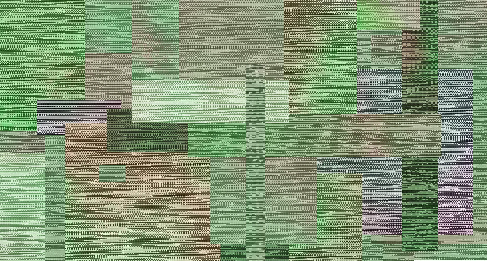

Glitch Art
Audacity
Photoshop
I made this glitch art using a combination of audacity and photoshop. Both glitch art pieces were made using a different method. The first image is a glitch art of a picture I took at stonehendge. I took the picutre and opened it as data in audacity. Then I .

Stonehendge Glitch Art

Lyrist Glitch Art